CLAUDE’S PICK
법률 AI 검색: Query Rewriting의 한계와 실전 벤치마크

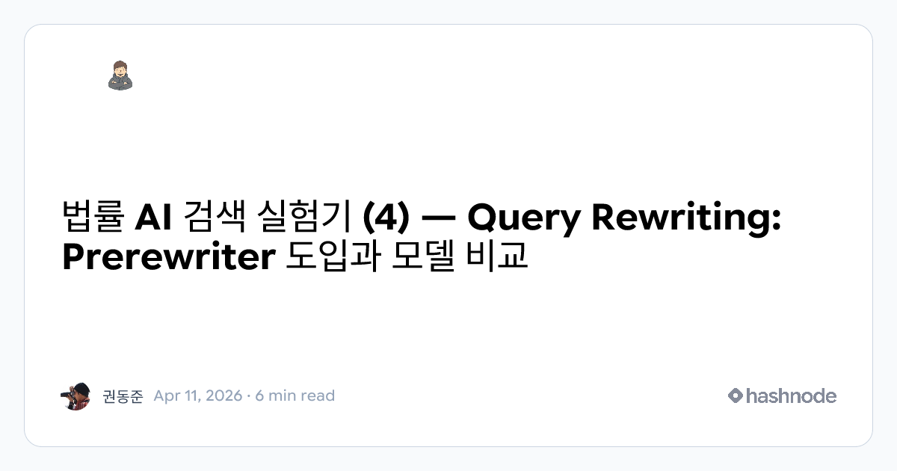
RAG 기반 법률 검색 시스템에서 쿼리 리라이팅 기법의 실제 효과를 검증한 연구. LLM 4종과 임베딩 5종의 조합으로 벤치마크를 수행한 결과, 학술 논문에서 권장되는 쿼리 분해와 리라이팅이 실제 도메인에서는 효과가 제한적임을 발견. 강한 임베딩 모델에 원본 쿼리를 그대로 입력하는 것이 모든 리라이팅 기법보다 동등하거나 우수한 성능을 보였으며, 벡터 검색 성능 개선보다 호출 구조 설계와 결과 선택 단계가 더 중요한 병목임을 규명했다.
핵심 포인트: 핵심 발견: 강한 임베딩 + 원본 쿼리 조합이 최적이며, 쿼리 분해는 실제 도메인에서 노이즈 증폭으로 인해 성능 하락 야기. 모델 선택보다 호출 구조 설계가 성능에 더 큰 영향을 미치는 것으로 확인되었다.
🔗 blog.dongjun.win/legal-ai-search-04-query…
블로그 (Blog)
Taste Skill — AI 프론트엔드의 밋밋함을 프로페셔널한 디자인으로

Claude Code의 frontend-design 스킬이 기능적이지만 AI 티가 나는 밋밋한 디자인을 생성하는 문제를 해결하려고 시도했으나, Taste Skill은 더 체계적인 접근을 제시한다. 레이아웃 실험성, 애니메이션 강도, 화면 밀도 세 가지 파라미터를 1~10 숫자로 조절하여 같은 프로젝트도 럭셔리부터 대시보드 스타일까지 완전히 다른 시각적 품질의 결과물을 생성한다. 4개의 스킬을 조합하여 타이포그래피, 색상, 여백, 모션 등을 단계별로 최적화한다.
핵심 포인트: 핵심 기여: DESIGNVARIANCE, MOTIONINTENSITY, VISUALDENSITY 세 가지 파라미터 조정만으로 AI 생성 프론트엔드의 시각적 품질을 2020년대 수준에서 현대적 수준으로 향상시키며, 구성 요소 겹침, 비대칭 레이아웃, 스프링 물리 애니메이션 같은 모던 디자인 기법을 자동 적용한다.
🔗 github.com/lexnlin/taste-skill
기타 (Others)
MarkItDown — 마이크로소프트 LLM용 문서 변환기 10만 스타 달성

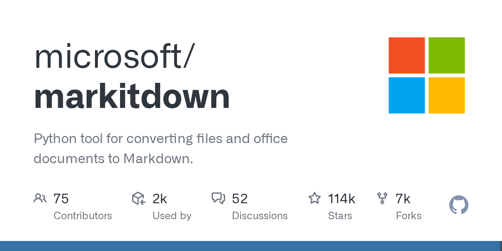
LLM 파이프라인에 입력되는 문서의 맥락이 파괴되는 문제를 해결하는 마이크로소프트의 오픈소스 도구. PDF, 워드, 엑셀, 이미지, 유튜브 자막 등 다양한 포맷을 구조를 보존하면서 Markdown으로 통합 변환하여 토큰 효율을 높인다. 사람이 읽기 좋은 변환이 아니라 LLM이 바로 처리하기 좋은 형태로 최적화한 점이 핵심이다.
핵심 포인트: 핵심 성과: GitHub 10만 스타 달성. PDF, PowerPoint, Word, Excel, 이미지 OCR, 오디오 전사, HTML, JSON, XML, ZIP, YouTube URL, EPUB 등 12개 이상 포맷 지원으로 조각난 문서 입구를 하나의 Markdown 레이어로 통합.
🔗 github.com/microsoft/markitdown
GitHub
AI & RESEARCH
PaperOrchestra: 다중 에이전트 기반 학술논문 자동 생성 시스템
학술 논문 작성에서 문헌 조사의 얕은 깊이, 인용의 부족, 개념도 생성 불가 등의 문제를 해결하기 위해 Google이 개발한 다중 에이전트 시스템. PaperOrchestra는 사전 작성 자료와 실험 로그를 제출 가능한 LaTeX 원고로 변환하며, 전문화된 에이전트들이 심층 문헌 종합, 플롯 생성, 개념도 작성, 반복 개선을 담당한다. 200개 상위권 학술지 논문으로 역엔지니어링한 PaperWritingBench 벤치마크도 함께 공개했다.
핵심 포인트: 핵심 성과: 인간 평가에서 문헌 리뷰 품질 5068%, 전체 원고 품질 1438%의 절대 우위를 달성했으며, 최초로 LaTeX 생성, 표적 문헌 조사, 개념도를 통합하는 논문 작성 시스템을 구현했다.
🔗 linkedin.com/posts/new-paper-from-google…
기타 (Others)
Unsloth — 9GB VRAM으로 로컬에서 Gemma 4 강화학습 실습
대규모 클라우드 인프라 없이 개인 PC 환경에서 LLM 강화학습을 실험하기 어려운 문제를 해결한다. Unsloth에서 공개한 무료 노트북은 GRPO 알고리즘을 적용하여 Gemma 4 모델이 스도쿠 문제를 자동으로 푸는 방법을 학습하도록 구성했다. 9GB VRAM만으로 로컬 환경에서 완전한 RL 사이클을 직접 실행할 수 있으며, 강화학습의 동작 원리를 직관적으로 이해하고 실습할 수 있는 자료를 제공한다.
핵심 포인트: 핵심 성과: 9GB VRAM 제약 조건 하에서 로컬 PC에서 Gemma 4 모델의 완전한 강화학습 사이클 실행 가능, GRPO 알고리즘을 통한 실제 문제 해결(스도쿠) 학습 구현으로 RL 개념의 실용적 이해 제공
🔗 colab.research.google.com/github/unslotha…
기타 (Others)
ParseBench — 에이전트 시대를 위한 OCR 벤치마크

기존 문서 인식 시스템들이 레이아웃 이해와 차트 인식에서 일관된 성능을 보이지 못하고 있으며, 전통적인 IDP도 약 10% 수준의 오류율을 기록하고 있다. LlamaIndex의 ParseBench는 에이전트 워크플로우에서 문서 이해의 중요성을 반영하여 실제 시스템의 문서 읽기 성능을 측정하는 새로운 OCR 벤치마크를 제시하며, LlamaParse Agentic이 약 84.9%의 우수한 성능을 기록했다.
핵심 포인트: 핵심 성과: LlamaParse Agentic이 84.9%의 정확도로 기존 IDP 대비 우수한 성능 달성, 레이아웃 이해와 차트 인식 성능 격차를 정량적으로 측정하는 오픈소스 벤치마크 제공.
기타 (Others)
야기엘론스키 대학교 — 단일 연산자로 모든 수학함수 표현

복잡한 수학 함수 계산을 위해 하드웨어에 다양한 연산 블록이 필요한 것이 문제다. 폴란드 야기엘론스키 대학교 연구진은 E(x, y) = exp(x) - ln(y) 연산자와 숫자 1만으로 사인, 코사인, 파이 등 모든 기본 수학 함수를 표현할 수 있음을 보였다. 순수 수학자들은 수렴 속도와 수식 복잡도를 지적하지만, 컴퓨터 공학 분야에서는 칩 설계 단순화와 하드웨어 비용 절감, 처리 속도 개선의 실마리로 평가하고 있다.
핵심 포인트: 핵심 기여: 단일 수학 연산자 E(x, y)와 숫자 1만으로 모든 기본 삼각함수 및 상수 표현 가능하며, 향후 반도체 칩 설계 단순화와 AI 연산 최적화에 혁신적 파급력을 가질 수 있다.
기타 (Others)
LLM-as-a-Verifier — 확률분포 기반 연속 보상으로 SOTA 달성
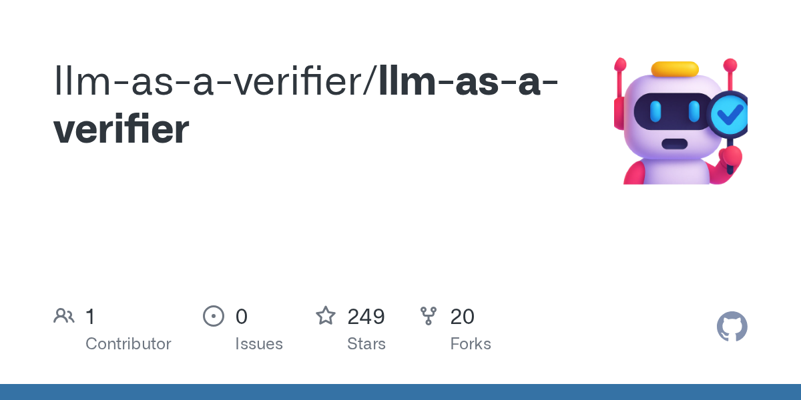
기존 LLM 평가자가 단순 점수만 출력하는 방식의 한계를 해결한 프레임워크. Stanford와 Berkeley의 공동 연구로, 점수 토큰의 전체 확률분포(logprob)를 활용해 연속적인 보상값을 추출하고, 1~20단계 세분화된 척도와 16회 반복 검증, 3분할 평가 기준을 통해 변별력을 극대화했다. Terminal-Bench 2에서 86.4%, SWE-Bench에서 77.8%의 최고 성능을 달성했다.
핵심 포인트: 핵심 성과: Gemini 2.5 Flash를 활용한 비대칭 평가 구조로 Terminal-Bench 2 86.4%, SWE-Bench 77.8% SOTA 달성, 확률분포 기반 연속 보상 추출로 양자화 오류 제거 및 무승부 판정 최소화.
🔗 github.com/llm-as-a-verifier/llm-as-a-ver…
기타 (Others)
하네스 엔지니어링 — 산업공학과 컴퓨터공학 방법론의 융합
현대 하네스 엔지니어링이 직면한 문제는 교과서 수준의 최적화 기법들이 실무에 10% 미만으로만 적용되고 있다는 점이다. 이 콘텐츠는 하네스 엔지니어링을 산업공학의 DMAIC 루프와 컴퓨터공학의 그래프 탐색, 비동기 노드 통신 같은 고급 기법들로 분류하고, 프로세스 최적화와 멀티에이전트 협력 설계를 통해 토큰 낭비를 최소화하면서 성공적인 결과를 도출하는 방법론을 제시한다.
핵심 포인트: 핵심 기여: 하네스 엔지니어링을 기업 조직 운영과 비유하여 waste 최소화, defect 제거, 다중 전문화된 에이전트 협력 설계라는 구체적 프로세스 관리 기법을 제안하며, 2026년 이러한 고급 테크닉들의 대규모 실무 적용이 예상된다.
🔗 threads.com/@slamslam__/post/DXDkqysE0vL?…
기타 (Others)
다익스트라 알고리즘 — 41년 만에 시간복잡도 개선 달성
1984년 Fredman-Tarjan이 피보나치 힙으로 O(m + n log n)의 시간복잡도를 증명한 이후 41년간 최적으로 여겨진 다익스트라 알고리즘의 벽이 깨졌다. 칭화대와 스탠포드 연구진이 방향 그래프의 최단경로 문제에서 O(m log²/³ n)의 시간복잡도를 달성했다. 핵심은 최단경로 계산이 정렬과 동치라는 기존 통념을 뒤집고, 비교-덧셈 모델에서 정렬 장벽을 우회하는 결정론적 알고리즘을 제시한 것이다.
핵심 포인트: 핵심 성과: 41년간 최적 알고리즘으로 여겨진 다익스트라를 개선하여 O(m log²/³ n) 시간복잡도 달성, 정렬 장벽 우회를 통해 이론 전산학의 새로운 가능성 제시
논문 (Papers)
Supergemma4-26b-multimodal — 한국 개발자의 완벽한 Gemma4 파인튜닝 모델
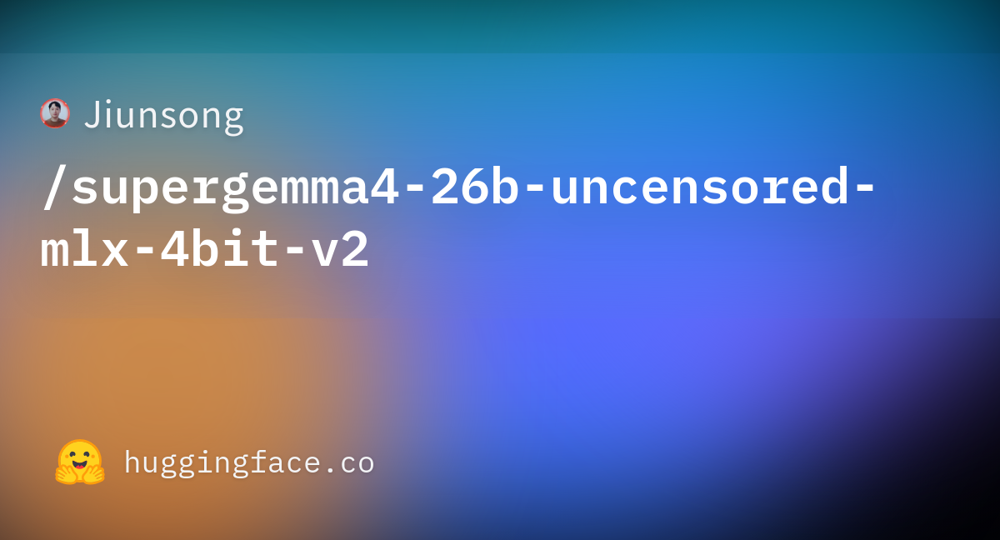
Gemma4-26b 모델의 기존 한계점들을 해결하기 위해 한국 개발자가 공개한 파인튜닝 버전. 완전한 비전 기능 지원과 무검열 처리는 물론 원본 모델의 툴콜 및 토크나이저 오류를 제거했다. 벤치마크 성능은 10% 향상되었으며 프롬프트 처리 속도는 90% 개선되어 허깅페이스 트렌딩 1페이지에 진입했다.
핵심 포인트: 핵심 성과: 벤치마크 기준 성능 10% 상향, 프롬프트 처리 속도 90% 향상, 완벽한 무검열 처리와 원본 모델의 구조적 오류 해결
🔗 huggingface.co/Jiunsong/supergemma4-26b-u…
기타 (Others)
AI Index 2026: AI 성능 폭발적 성장, 안전·일자리는 낙오
스탠포드 HAI 연구소가 발표한 AI Index 2026 보고서에 따르면 AI 성능이 인간의 평가 지표를 완전히 압도하고 있다는 것이 드러났다. 자율 소프트웨어 엔지니어링 능력은 1년 만에 60%에서 거의 100%에 도달했으며, 중국이 미국을 따라잡아 기술 패권 경쟁이 치열해지고 있다. 반면 AI 안전성, 일자리 영향, 교육 대응은 발전 속도를 전혀 따라가지 못하고 있으며, 미국의 압도적 인프라 우위(데이터센터 5,427개)에도 불구하고 핵심 칩 생산은 대만 TSMC에 집중되어 있다.
핵심 포인트: 핵심 성과: SWE-bench Verified에서 성능이 1년 만에 60%에서 100% 근처로 수직 상승했으며, 중국과 미국의 최고 모델 격차는 2.7%로 사실상 동등 수준에 도달. 한국은 인구당 AI 특허 1위를 기록하며 혁신 밀도 1위를 달성했다.
🔗 hai.stanford.edu/assets/files/ai_index_re…
기타 (Others)
MSA Context: 1억 토큰 처리로 RAG의 한계를 극복한 새로운 모델 구조
기존에는 1억 토큰 처리를 위해 외부 데이터베이스 기반 RAG나 선형 어텐션 구조를 사용했으나 성능 저하와 정확도 문제가 발생했다. MSA는 모델의 뇌 구조 자체를 개조하여 RAG 없이 1억 토큰을 직접 처리할 수 있는 새로운 접근 방식을 제시한다.
핵심 포인트: 핵심 기여: RAG를 제거하면서도 1억 토큰의 컨텍스트 길이를 구현하여 기존 방식의 성능 저하 문제를 해결하고, 모델 자체의 구조 혁신으로 장거리 의존성 처리 능력을 대폭 향상시켰다.
🔗 linkedin.com/posts/kiwoong-yeom_1억-토큰의-장벽…
기타 (Others)
BridgeBench — Claude Opus 4.6 성능 저하 논란 분석
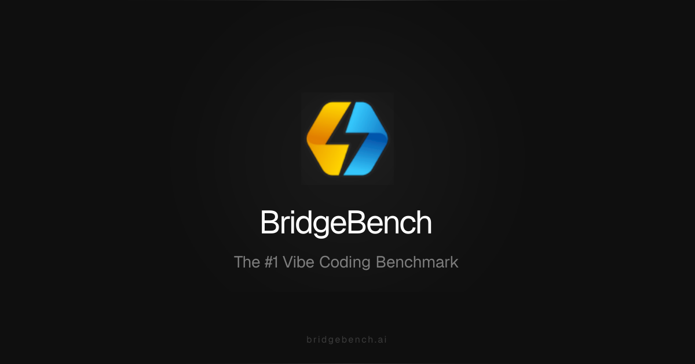
Claude Opus 4.6이 환각 벤치마크에서 급격한 성능 하락을 보였다는 주장이 제기되었다. BridgeBench에서 지난주 83.3% 정확도로 2위를 기록했으나 이번주 68.3% 정확도로 10위로 하락했다는 것이다. 그러나 배경 정보에 따르면 두 테스트의 범위가 다르다. 초기 테스트는 6개 작업, 최신 테스트는 30개 작업 기준으로, 공통 작업 6개만 비교하면 87.6% 대 85.4%로 유사한 성능을 보여 실질적 변화가 없을 가능성이 높다.
핵심 포인트: 핵심 성과: BridgeBench 벤치마크 범위 확대(6개→30개 작업)에 따른 성능 지표 변동을 데이터 기반으로 검증하여, 공통 작업 기준 2.2%의 미미한 성능 차이만 확인.
🔗 bridgebench.ai/hallucination/claude-opus…
기타 (Others)
ColBERT: 검색 성능 99% 유지하며 토큰 강조 표시 실현
문서 검색 시 쿼리와 관련된 토큰을 실시간으로 강조 표시할 수 있는 기능의 필요성을 해결하기 위해 수정된 ColBERT 모델을 개발했다. 이 접근 방식은 원래의 검색 성능 99%를 유지하면서도 Gemma 2 같은 245배 더 큰 모델 수준의 토큰 수준 강조 표시 품질을 달성한다.
핵심 포인트: 핵심 성과: 원본 검색 성능 대비 99% 유지율을 달성하면서 245배 더 큰 모델과 비교 가능한 토큰 수준의 강조 표시 품질 구현. ECIR 2026에서 발표된 현재 진행 중인 연구로, 검색 효율성과 해석 가능성의 균형을 달성했다.
기타 (Others)
Claude: 어드바이저 전략으로 비용 11.9% 절감

앤트로픽의 Claude 플랫폼은 가볍고 빠른 Sonnet, Haiku 모델이 일상적인 작업을 처리하고, 복잡한 판단이 필요한 순간에만 최고 성능의 Opus 4.6 모델에게 조언을 구하는 어드바이저 전략 기능을 공개했다. 이 협업 구조를 통해 코딩 벤치마크에서 Sonnet 단독 작업 대비 성능은 향상되면서도 전체 작업 비용을 11.9% 줄일 수 있음을 입증했다.
핵심 포인트: 핵심 성과: Opus의 조언을 받은 Sonnet이 단독 작업 대비 벤치마크 점수 상승과 함께 전체 작업 비용 11.9% 절감을 달성했으며, 다중 AI 모델의 역할 분담으로 효율성을 극대화했다.
🔗 claude.com/blog/the-advisor-strategy
기타 (Others)
Boxer — 2D 객체를 실시간 3D 공간 좌표로 변환
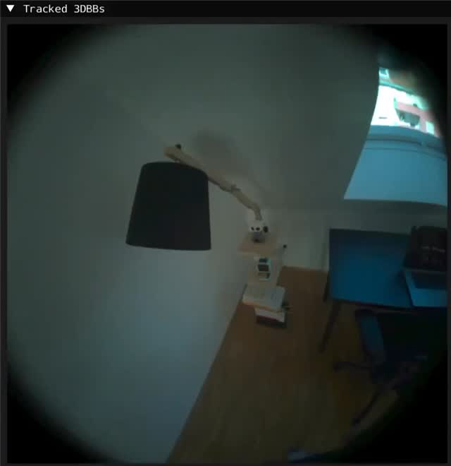
2D 비전 모델이 감지한 객체를 3D 공간 좌표로 변환하는 과정에서 높은 연산량이 필요한 문제를 해결한다. Meta의 Boxer 모델은 RTX 4090에서 30개 객체를 20ms 내에 동시 처리하여 실시간 3D 변환을 가능하게 한다. 오픈소스로 공개되어 스마트 글래스 등 AR/VR 기기의 3D 공간 인식 능력을 대중화하는 기반을 마련한다.
핵심 포인트: 핵심 성과: RTX 4090 기준 30개 객체의 동시 3D 변환을 20ms 내 처리하여 실시간 처리 구현, SAM 3 등 기존 2D 비전 모델과 연동하여 초고속 3D 좌표 및 부피 계산 제공.
🔗 github.com/facebookresearch/boxer
GitHub
DEVTOOLS & OPEN SOURCE
Fire-PDF — Rust 기반 PDF 파싱 엔진으로 처리 속도 5배 향상
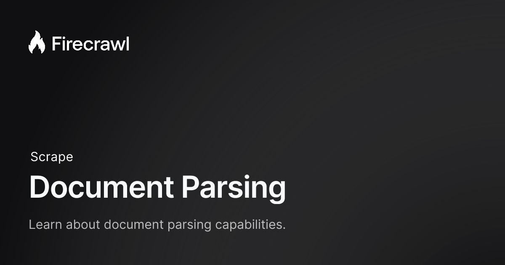
개발자들이 PDF 문서를 구조화된 데이터로 변환할 때 겪는 파싱 성능 문제를 해결하는 Firecrawl의 새로운 Rust 기반 파싱 엔진 Fire-PDF. 신경망 레이아웃 모델을 통해 표를 마크다운으로, 수식을 LaTeX 형태로 정확하게 변환하며, 기존 대비 5배 빠른 속도로 216페이지 재무 보고서를 83초 안에 처리한다. API를 통해 추가 설정 없이 자동 적용되어 데이터 전처리 과정을 간소화한다.
핵심 포인트: 핵심 성과: 기존 대비 5배 빠른 처리 속도 달성, 216페이지 문서 83초 내 처리, 신경망 레이아웃 모델로 표와 수식을 마크다운·LaTeX 형태로 완벽 인식
🔗 docs.firecrawl.dev/features/document-pars…
기타 (Others)
claude-dashboard — Claude Code 컨텍스트 사용률을 상태바에서 실시간 모니터링
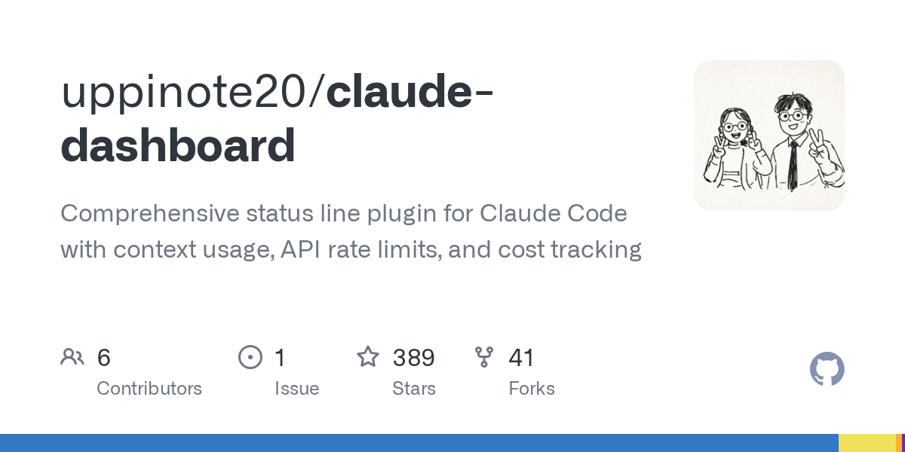
Claude Code 사용 중 컨텍스트 한도와 요금 상태를 확인하기 위해 명령어를 입력하거나 웹 콘솔을 열어야 하는 불편함으로 인해 작업 흐름이 단절되고 예기치 않게 한도에 도달하는 문제가 발생한다. claude-dashboard는 상태바 플러그인으로 컨텍스트 사용률, 세션 비용, 요금제 잔여량을 항상 표시해 이 문제를 해결한다. Compact, Normal, Detailed 세 가지 모드와 색상 기반 인지 부하 감소 기능, 커스텀 레이아웃 설정으로 사용자 맞춤형 모니터링을 제공한다.
핵심 포인트: 핵심 성과: 3줄 설치로 적용 가능하며, 50% 이하 초록색, 80% 이상 빨강색 표시로 숫자 읽기 없이 시각적 상태 파악 가능. 일일 예산 설정, 토큰 분해, 캐시 히트율, 고갈 예상 시간 등 최대 6줄의 상세 정보 표시 지원.
🔗 github.com/uppinote20/claude-dashboard
기타 (Others)
OpenHarness — LLM에 도구와 기억을 더한 오픈소스 에이전트 환경
LLM만으로는 실제 업무 적용에 부족하다는 문제를 해결하기 위해 OpenHarness가 공개되었다. 이 파이썬 기반 100% 오픈소스 에이전트 환경은 LLM에 웹 검색, 파일 제어, MCP 등 43가지 도구와 세션을 넘나드는 영구 메모리, 멀티 에이전트 협업 기능을 통합제공한다. Cursor와 CLI 환경에서 즉시 연동되어 에이전트 직접 구축의 복잡성을 크게 단축시킨다.
핵심 포인트: 핵심 기여: 43가지 내장 도구, 영구 메모리 시스템, 멀티 에이전트 기능을 갖춘 완전한 오픈소스 에이전트 플랫폼 제공으로 개발자들의 에이전트 구축 시간을 대폭 단축.
🔗 github.com/HKUDS/OpenHarness
GitHub
Claude Code — 웹 기반 계획 수립으로 AI 코드 생성 워크플로우 혁신

AI 에이전트의 자율성이 높아지면서 복잡한 코드를 터미널 창만으로는 파악하기 어려워지는 문제를 해결하기 위해 앤트로픽이 Claude Code에 ‘/ultraplan’ 기능을 출시했다. 클라우드 기반 웹 브라우저에서 전체 구현 계획서를 시각화하여 사용자가 구조를 파악하고 수정한 뒤, 로컬 터미널에서 실제 코드를 실행하는 투트랙 방식을 도입했다. 이는 인간의 인지 흐름에 맞춘 UI와 워크플로우 재설계를 보여주는 변화다.
핵심 포인트: 핵심 성과: 복잡한 코드 기획을 웹 기반 시각화로 제시하고 로컬 환경과 클라우드를 분리하여 사용자 의도 파악 정확도를 향상시켰다.
🔗 code.claude.com/docs/en/ultraplan
기타 (Others)
Hermes Agent — 텔레그램에 10분 안에 연동하는 LLM 에이전트
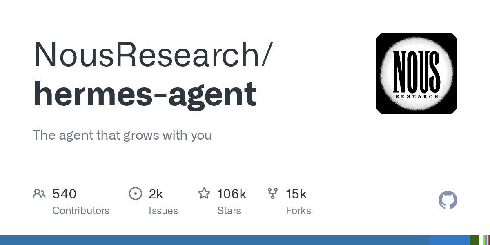
OpenClaw보다 강력한 LLM 에이전트인 Hermes Agent를 텔레그램에 연동하려는 초보자들이 복잡한 설치 과정으로 어려움을 겪는 문제를 해결한다. 이 가이드는 빌드, 키 발급, 설정, 구동의 4단계로 단순화된 설치 프로세스를 제공하며, Docker 기반의 안전하고 깔끔한 방식으로 로컬 경로 설정 시 정확한 폴더 주소 입력이 핵심 포인트임을 강조한다.
핵심 포인트: 핵심 기여: Hermes Agent를 텔레그램과 연동하는 설치 시간을 10분 이내로 단축하고, Docker를 활용한 재현 가능한 환경 구성으로 초보자의 진입 장벽을 제거했다.
🔗 github.com/nousresearch/hermes-agent
기타 (Others)
Claude Code 2.1.101 — 팀 온보딩과 엔터프라이즈 안정성 대폭 개선
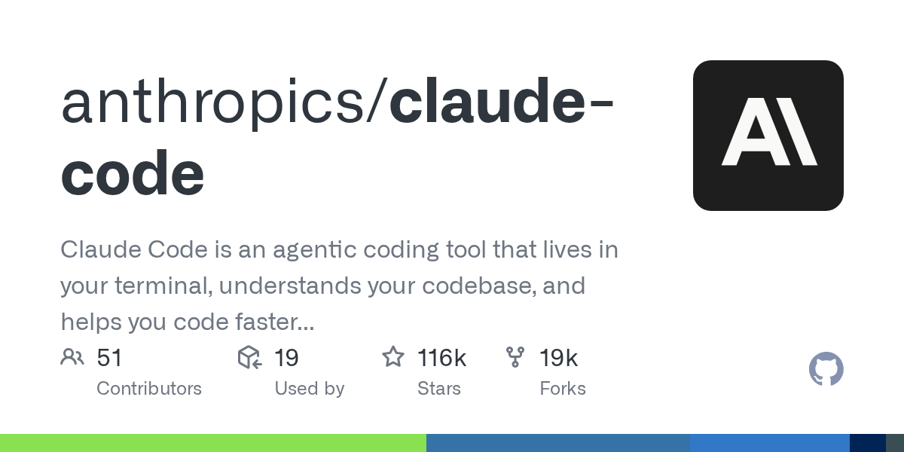
Claude Code 사용자들이 새 팀원에게 사용법을 설명할 때의 번거로움을 해결하기 위해 /team-onboarding 명령어를 추가했다. 이 명령어는 사용자의 Claude Code 사용 패턴을 분석해 팀원용 온보딩 가이드를 자동으로 생성한다. 동시에 기업 환경의 TLS 프록시 설정 복잡성을 제거하고, —resume 옵션의 대형 세션 복구 안정성을 대폭 개선했으며, 메모리 누수 및 보안 취약점을 다수 수정했다.
핵심 포인트: 핵심 성과: /team-onboarding으로 수동 설명 작업 자동화, OS 인증서 저장소 기본 신뢰로 기업 프록시 설정 불필요, 대형 세션 복구 시 대화 흐름 손실 문제 해결 및 5가지 —resume 관련 버그 수정.
🔗 github.com/anthropics/claude-code/releases
기타 (Others)
Conductor — Claude Code를 병렬 실행하는 Mac 네이티브 앱
개발자가 여러 Claude Code 세션을 동시에 실행할 때 각 세션 간 간섭이 발생하는 문제를 해결하는 Mac 앱. Conductor는 git worktree와 브랜치를 자동으로 생성하여 각 Claude가 완전히 격리된 작업 환경에서 독립적으로 실행되도록 관리한다. Rust 백엔드와 Mac 네이티브 렌더러로 빠른 속도와 가벼운 사용감을 제공하며, 클릭 한 번으로 다중 세션을 구동하고 실시간 진행 상황을 확인할 수 있다.
핵심 포인트: 핵심 성과: 여러 Claude Code 세션의 완전 격리된 병렬 실행, git worktree 자동 관리를 통한 한 번의 클릭으로 깔끔한 작업 공간 생성, Rust 백엔드 기반 고속 데스크톱 앱
기타 (Others)
Mesurer — 디자인 픽셀 완벽도를 위한 웹 측정 도구
웹사이트나 앱 개발 시 디자이너의 의도한 간격과 위치를 정확히 구현하기 어려운 문제를 해결하는 도구다. 복잡한 개발자 도구나 코드 분석 없이 마우스를 올려 요소 간 간격과 크기를 직관적으로 측정할 수 있으며, 무료이고 단 한 줄의 명령어로 설치 가능해 개발 중인 로컬호스트 환경에서 즉시 활용할 수 있다.
핵심 포인트: 핵심 기여: 개발자 도구 없이 마우스 호버만으로 1픽셀 단위의 정확한 요소 측정이 가능하며, 무료 서비스로 한 줄 설치 명령어로 빠르게 도입할 수 있다.
기타 (Others)
Multica — 앤트로픽의 Claude Managed Agents를 오픈소스로 구현
앤트로픽이 에이전트 구축 및 배포 전용 인프라인 Claude Managed Agents를 공개한 지 몇 시간 만에 동일한 기능을 구현한 오픈소스 프레임워크 Multica가 깃허브에 공개되었다. 기존에 에이전트를 프로덕션 환경에 배포하려면 수개월의 인프라 작업이 필요했으나, 이제는 작업과 도구만 설정하면 며칠 내에 배포가 가능해졌다. 이는 AI 시대 기업이 새로운 플랫폼 장벽을 세우면 오픈소스 진영이 실시간으로 이를 허무는 패턴이 가속화되고 있음을 보여준다.
핵심 포인트: 핵심 기여: Notion, Asana, Rakuten, Sentry 등이 Claude Managed Agents를 통해 단 몇 주 만에 실무 에이전트를 완성했으며, 오픈소스 Multica를 통해 동일한 기능을 누구나 접근 가능하게 제공한다.
🔗 github.com/multica-ai/multica
GitHub
ENGINEERING
Anthropic Managed Agents — 모델 진화에 따른 ‘죽은 무게’ 문제 해결
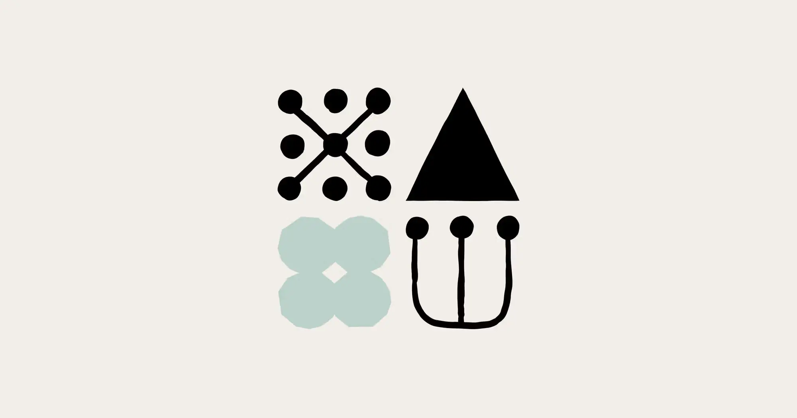
AI 모델이 업그레이드될 때마다 이전 모델의 한계를 보정하던 패치 코드들이 족쇄가 되는 문제가 발생한다. Anthropic의 Managed Agents는 OS의 추상화 원칙을 차용하여 세션, 하네스, 샌드박스를 완벽히 분리하고, 인터페이스에만 엄격하면서 구현에는 중립적인 구조로 이 반복적 고통을 해결한다. 모델의 성장이 기존 코드를 무효화하는 악순환을 끊고 장기적으로 지속 가능한 에이전트 아키텍처를 제시한다.
핵심 포인트: 핵심 기여: 50년 생존한 Unix read() 시스템 호출처럼 불변의 인터페이스를 정의함으로써 모델 진화에 독립적인 에이전트 인프라 구현, 감시 로직, 중복 필터, 컨텍스트 관리 등 모델 약점 위의 패치들을 근본적으로 제거하는 구조 설계.
🔗 anthropic.com/engineering/managed-agents
기타 (Others)
PRODUCT & INDUSTRY
Agent Skill System — 상담원의 복잡한 작업 수행 능력 향상
현대 상담원 시스템에서 상담원이 다양한 애플리케이션, 웹 브라우저, 인터페이스를 모니터링하고 상호 작용해야 하는 실제 환경에서의 효율성 문제가 발생한다. 스킬 사용을 통해 상담원 시스템의 핵심 구성 요소를 강화하고 복잡한 작업 완료 능력을 크게 향상시킨다.
핵심 포인트: 핵심 기여: 스킬 기반 시스템 도입으로 상담원이 다중 환경에서 복합 업무를 효율적으로 처리할 수 있도록 지원하며, 전체 상담원 플랫폼의 핵심 구성 요소로 확립.
논문 (Papers)
Gemini — macOS 정식 앱 출시로 단축키 지원
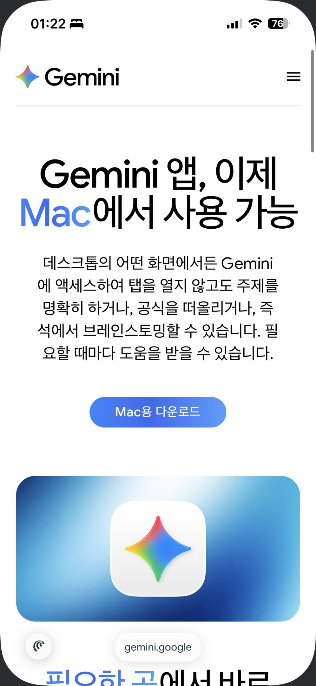
Google Gemini의 macOS 네이티브 앱이 정식 출시되었다. 기존 웹 기반 서비스의 접근성 문제를 해결하기 위해 macOS 데스크톱 앱을 제공하며, 단축키 지원으로 맥 사용자의 작업 효율성을 크게 향상시킨다. 윈도우 버전은 아직 미출시 상태이며, 맥북 사용자들은 더욱 편리한 작업 환경에서 Gemini AI 기능을 활용할 수 있게 되었다.
핵심 포인트: 핵심 성과: macOS 네이티브 앱 정식 출시로 키보드 단축키 지원을 통한 빠른 접근성 제공.
기타 (Others)
Claude Opus 4.7 — 앤트로픽의 AI 디자인 도구로 판도 바뀐다
디자인 업계가 직면한 문제는 전문적인 웹사이트와 프레젠테이션 제작에 코딩이나 디자인 지식이 필수라는 것이다. 앤트로픽이 Claude Opus 4.7 모델과 함께 새로운 AI 디자인 도구를 출시함으로써 자연어 프롬프트만으로 랜딩 페이지와 프레젠테이션을 완성할 수 있게 된다. 이 발표 소식만으로도 Adobe, Wix, Figma 등 기존 디자인 플랫폼의 주가가 하락했으며, Gamma나 Google Stitch와 같은 경쟁 서비스들도 강력한 경쟁자를 맞이하게 되었다.
핵심 포인트: 핵심 성과: 비전문가도 프롬프트 하나로 시각적 디자인 작업을 완성하는 워크플로우 구현, 보안 특화 모델인 Claude Mythos 테스트에 이어 시각적 작업 영역까지 플랫폼 확장으로 디자인 툴 시장의 경쟁 구도 재편성.
🔗 theinformation.com/briefings/exclusive-an…
기타 (Others)
Claude Code Meetup — 판교에서 만나는 AI 개발자 커뮤니티
한국 Claude Code 커뮤니티가 서울에서의 성공적인 세 차례 밋업에 이어 판교로 확대 개최한다. 4월 30일 야놀자 판교 오피스에서 Claude Code 최신 업데이트, AI 온보딩 경험담, 하네스 온톨로지 활용, AX 실무 활용 팁 등 현업 엔지니어들의 실제 경험을 공유하는 발표 라인업으로 구성된다. Anthropic 공식 지원과 AttentionX 공동 주최로 진행되는 이 행사는 판교와 수도권 개발자들을 위한 실무 중심의 네트워킹 기회를 제공한다.
핵심 포인트: 핵심 기여: Claude Code 실무 활용 사례를 공유하는 4개 주제 발표와 현업 엔지니어 네트워킹을 통해 AI 개발 커뮤니티 활성화 및 실전 지식 전달.
기타 (Others)
Claude Code: Epitaxy 환경으로 멀티 에이전트 협업 개발 플랫폼 공개

기존 AI 코드 에디터는 단일 컨텍스트 창에서만 작업 관리가 가능해 복잡한 풀스택 개발에 제약이 있었다. 앤트로픽의 Claude Code 데스크톱 앱에 공개될 Epitaxy 환경은 파워 유저를 위한 직관적 UI와 멀티 저장소 협업 레이아웃을 제공하며, 코드 프리뷰, 작업 계획, 서브 에이전트 실행, 변경사항을 통합 관리할 수 있다. Coordinator Mode를 통해 맞춤형 에이전트를 생성하고 병렬 에이전트에게 작업을 위임하는 기능을 추가해 완벽한 개발팀처럼 작동하는 AI 워크스페이스를 실현한다.
핵심 포인트: 핵심 기여: Plan, Tasks, Diff를 하나의 인터페이스에서 관리하는 통합 AI 워크스페이스 제공 및 Coordinator Mode를 통해 여러 병렬 에이전트의 동시 작업 조율 가능.
🔗 threads.com/@choi.openai/post/DXDYs_gD1Ic…
기타 (Others)
Codex
큰 거 온다… 오픈AI의 ‘Codex’가 채팅과 개인용 에이전트를 하나로 합친 슈퍼앱으로 진화할 전망입니다. 가장 눈에 띄는 것은 새롭게 도입되는 ‘Heartbeat’ 시스템과 에이전트 생성 기능인데요.
🔗 link.naver.com/bridge?url=https://www.dat…
기타 (Others)
Claude Managed Agents — 에이전트 배포 시간 10배 단축

기업들이 에이전트를 프로덕션 환경에 배포할 때 수개월간 소요되던 인프라 작업이 병목이었다. 앤트로픽의 Claude Managed Agents는 전용 인프라를 제공하여 작업, 도구, 가드레일 설정만으로 수일 내 배포를 가능하게 한다. Notion, Asana, Rakuten, Sentry 등 주요 기업들이 수주 내에 실무용 에이전트를 완성했으며, 이제 개발 팀들은 인프라 세팅 대신 사용자 경험 개선에 집중할 수 있다.
핵심 포인트: 핵심 성과: 에이전트 배포 시간을 기존 수개월에서 수일로 단축(10배 가속화)하며, Notion의 병렬 작업 처리, Asana의 AI 팀원 구축 등 복잡한 에이전트 시스템을 수주 내 실현.
🔗 claude.com/blog/claude-managed-agents
기타 (Others)